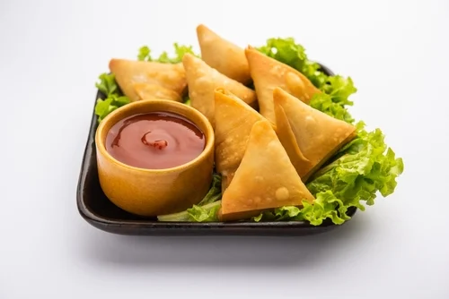

Delicious Recipes Food Benefits

SamosA - - an Upgraded Version of the Favourite Snack!
Ingredients:
- Maida (All-purpose flour) 2 Cups
- Namak (Salt) 1/2 tsp
- Ajwain (Carom Seeds) 1/2 tsp
- Ghee 3 tbs
- Pani (Water) 1/2 Cup or as rquired
Potato Stuffing
- Aloo (Potatoes) Boiled ½ kg
- Matar (Peas) 1 Cup (Optional)
- Hara dhania (Coriander) ½ Cup
- Hari mirch (Green chilies) Chopped 1 tbs
- Namak (Salt) 1 tsp or to taste
- Lal mirch powder (Red chili powder) 1 tsp
- Dhania powder (Coriander powder) 1 tsp
- Haldee powder (Turmeric powder) ¼ tsp
- Chaat masala ½ tsp
- Garam masala powder (Whole spice powder) ½ tsp
- Oil 1-2 tbs
- Zeera (Cumin seeds) 1 & ½ tsp
- Oil for frying
Procedure
- In bowl,add all-purpose flour,salt,carom seeds,ghee and mix well until crumbled.
- Gradually add water and knead until smooth dough is form,cover with a wet cloth and let it rest for 30 minutes.
- In bowl,add potatoes and mash them slightly,add peas,coriander,green chilies,salt,red chili powder, coriander powder,turmeric powder,chaat masala,whole spice powder and mix well.
- In pot,add oil,cumin seeds and mix,add potato mixture and fry for 2 minutes and let it cool.
- Wet your hands with water and knead dough again.
- Take a small dough,make a ball and coat in dry flour and roll out in oval shape with the help of rolling pin and cut into two pieces.
- On one side of dough,apply water,join two sides/edges to make a cone and press gently to seal the cone.
- Fill the cone with potato stuffing,apply water on the edges and bring the edges together and seal the edges properly.
- Prepare the remaining samosas similarly and set aside.
- In wok,heat oil and fry on medium low flame until golden.